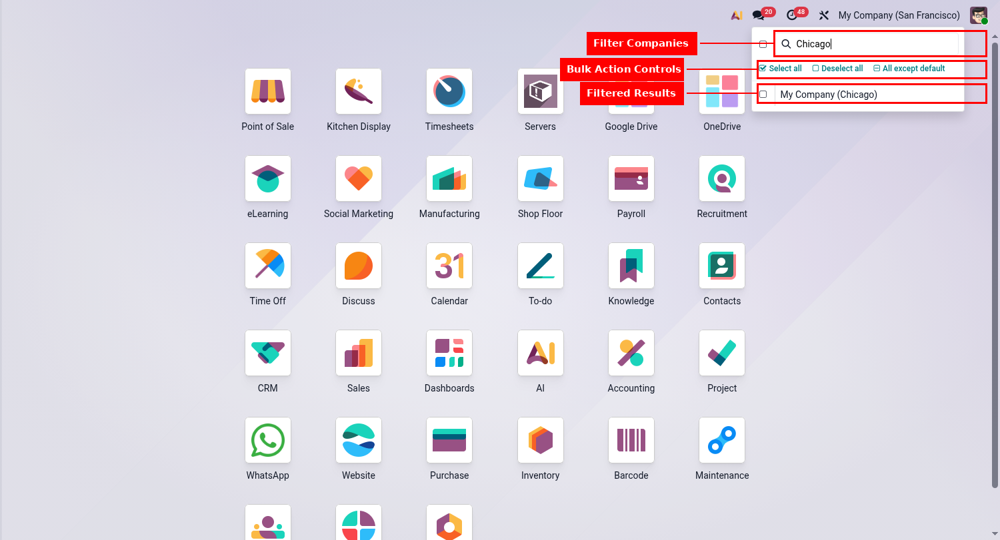
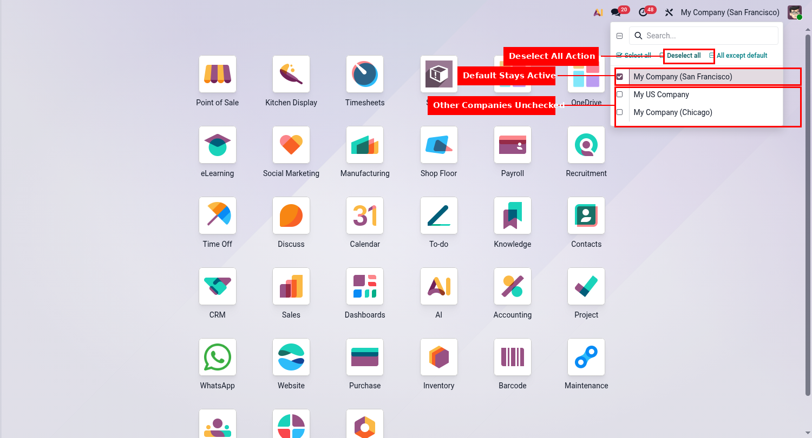
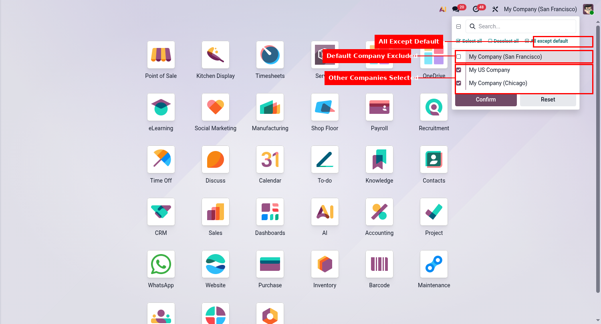

Odoo builds a search box and a select-all control into the company switcher, then keeps both hidden until a user is allowed into more than nine companies. Most databases never reach that number, so nobody ever sees them. This module brings them out and adds the buttons that were missing.
Type a few letters, whatever the company count.
Work across every company at once.
Back to your default company in one click.
Every company but the one you land on.
One company always stays active, as Odoo requires.
No models, no settings. Install and use.
Install on a multi company database.
Click the company name in the top bar.
Type a name, or use the buttons.
Odoo reloads in the companies you picked.


